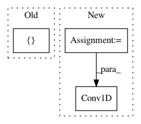

b68db1aaf6abe4d2cea8321cc6f1564228dd60f5,deepchem/models/tensorgraph/models/seqtoseq.py,AspuruGuzikAutoEncoder,_create_encoder,#AspuruGuzikAutoEncoder#Any#Any#,501
Before Change
self._embedding_stddev = layers.Dense(
self._embedding_dimension, in_layers=prev_layer, name="embedding_std")
prev_layer = layers.CombineMeanStd(
[self._embedding_mean, self._embedding_stddev], training_only=True)
return prev_layer
def _create_decoder(self, n_layers, dropout):
After Change
def _create_encoder(self, n_layers, dropout):
Create the encoder as a tf.keras.Model.
input = self._create_features()
gather_indices = Input(shape=(2,), dtype=tf.int32)
prev_layer = input
for i in range(len(self._filter_sizes)):
filter_size = self._filter_sizes[i]
kernel_size = self._kernel_sizes[i]
if dropout > 0.0:
prev_layer = Dropout(rate=dropout)(prev_layer)
prev_layer = Conv1D(
filters=filter_size, kernel_size=kernel_size,
activation=tf.nn.relu)(prev_layer)
prev_layer = Flatten()(prev_layer)
prev_layer = Dense(
self._decoder_dimension, activation=tf.nn.relu)(prev_layer)
prev_layer = BatchNormalization()(prev_layer)
In pattern: SUPERPATTERN
Frequency: 3
Non-data size: 3
Instances
Project Name: deepchem/deepchem
Commit Name: b68db1aaf6abe4d2cea8321cc6f1564228dd60f5
Time: 2019-05-31
Author: peastman@stanford.edu
File Name: deepchem/models/tensorgraph/models/seqtoseq.py
Class Name: AspuruGuzikAutoEncoder
Method Name: _create_encoder
Project Name: nl8590687/ASRT_SpeechRecognition
Commit Name: 69c3f3310173aa9e6acea7b37449b6d873538134
Time: 2018-04-09
Author: 3210346136@qq.com
File Name: SpeechModel5.py
Class Name: ModelSpeech
Method Name: CreateModel
Project Name: inspirehep/magpie
Commit Name: 28b8b9d39f53d8327dbf658048a81b7046ae398f
Time: 2017-10-08
Author: stypka@spotify.com
File Name: magpie/nn/models.py
Class Name:
Method Name: cnn